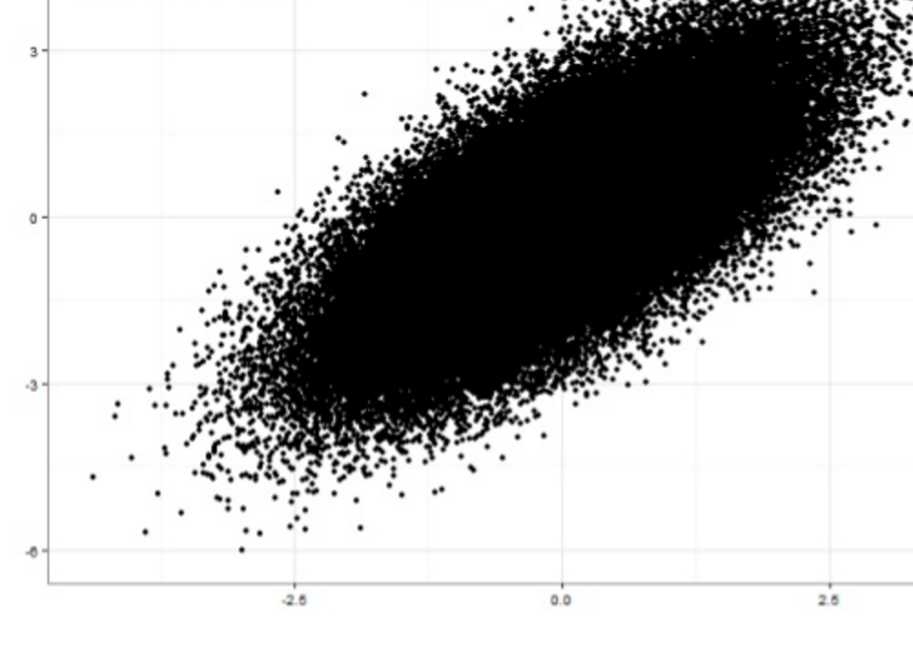
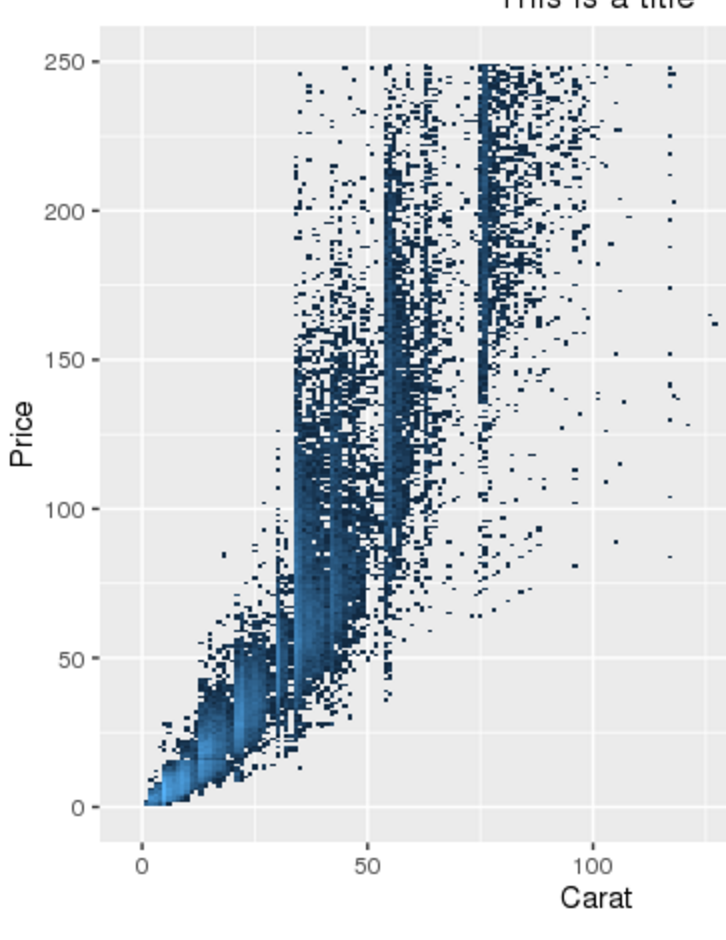

Synthetic Administrative Data
Ongoing Efforts at the Urban Institute
IRS Synthetic Administrative Data
- Goal: Improve on the SOI PUF

Recent Research Developments
Bayesian Approaches w/ Gibbs Samplers

Our Problem
- Big Data
- Small Budget
- Advanced Statistics
- Programming Limitations
'Big Data'
- ~One Billion Rows (Growing to 2.5B)
- Currently ~1TB of Data
- Couple Hundred Columns (But this shouldn't matter)
Small Budget
Affordability from Elasticity
Standing Clusters - either in Cloud or on Premise are unaffordable.
Advanced Statistics

Programming Limitations
- Preference for SAS/STATA
- Some R-Users, a few Python-Users
- Java/Scala/C are off the table
Accessibility as a General Concern
Our Solution
- Apache Spark
- R/Python w/ IDEs in Browser
- AWS Elastic MapReduce (EMR)
Apache Spark
- Distributed Memory Framework for Big Data
- Written in Scala/Java but has R/Python APIs
- Good & Improving Statistical Methods
- Free & Open Source

Relatively Familiar Languages
- SparkR
- PySpark
Development Environments in Browser
- RStudio for R
- Jupyter Notebooks for Python
Amazon Web Services (AWS) Elastic MapReduce (EMR)
- Elastic - Only Pay for Clusters During Use
- Fast - 10-12 Min Spin Up w/ Bootstrap
- Free Data Transfer From S3 (AWS Storage)
Amazon Web Services (AWS) Elastic MapReduce (EMR)
Also Cheap:
Four R3.8X Large EC2 Instances (Renting Four Computers in the Sky) gets you:
- 244 GB Memory Each (~1TB Total)
- 32v vCPU Each (128 Total)
- 1300 GB SSD Storage
All for ~$10/Hour
Our Solution (Theory)


New Problem - How do Researchers Use This?
- Create AWS Account
- Download PPM Key, Create PPK Key w/ PuttyGen
- Install AWS Command Line
- Reference Linux Command Line Bootstrap Script
- Install/Use Putty for SSH
- Run FoxyProxy for Portforwarding
Instead: AWS CloudFormation
Big Data Social Science
Some Considerations
Scatterplots Don't Work
Tile Plots (Aka Bivariate Histograms) Do
Parallelized Statistics
- Generalized Linear Models (LM-BFGS)
- Iteratively Reweighted Least Squares & Penalized Regression (OWL-QN)
- Survival Models?
- Time-Series Models?
Me
- Alex, hi.
- Data Scientist @ Urban Institute
- Big Data Statistics w/ Spark
- Natural Language Processing
- Machine Learning
- Professor of Data [Viz & Science] @ JHU & GU
- Contact:
- aengler@urban.org
- @alexcengler


Prison Population Forecaster

Immigration and Residential Segregation